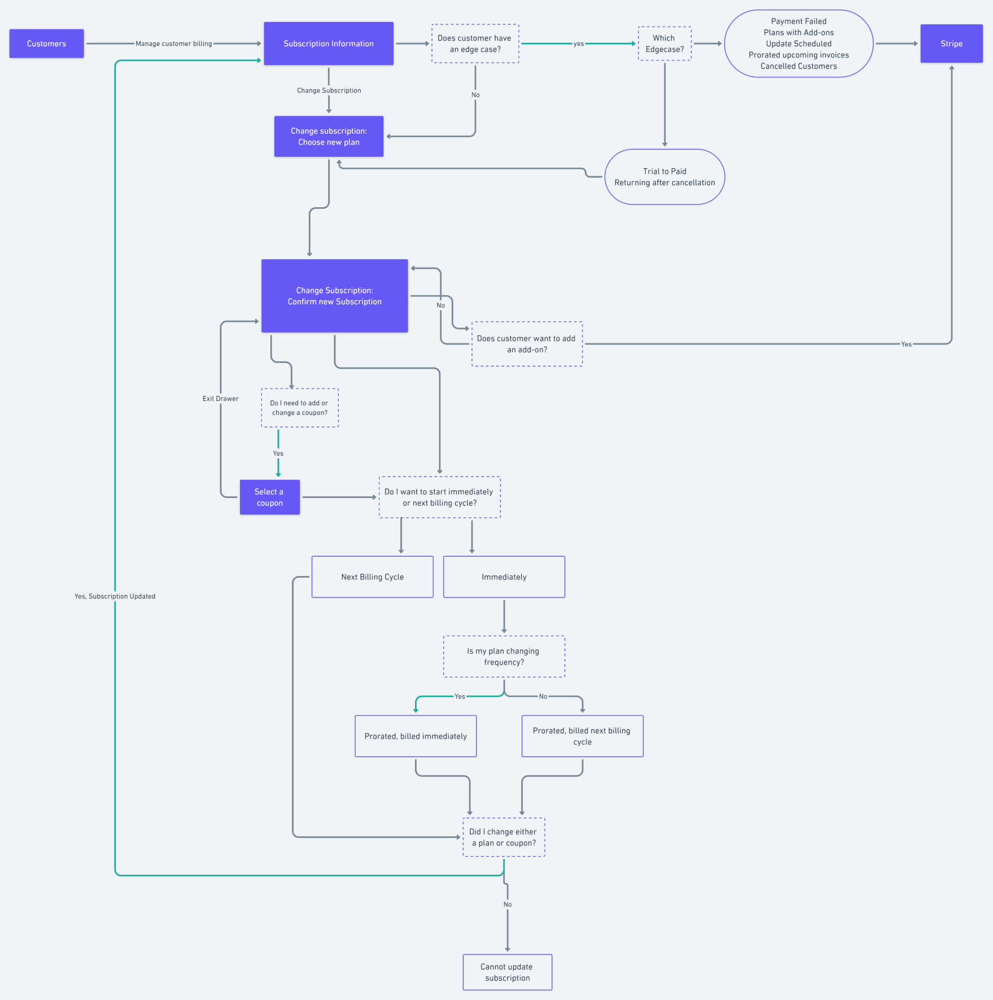

Ability to view a customer's subscription & the status of their subscription.
fsdfds
Designing a scalable billing module to manage a customer's billing
Our customer success team spends a lot of time on the administration of customer billing - which is quite manual, tedious, and error-prone.
- CS spends 30 min/day on billing
- Director of Sales & CS spends 5 hours/week
Look into what was "manual, tedious and error-prone" and provide a scalable solution for the team. Own the end-to-end design.
Created a scalable billing module which integrates into our platform, as well as other products. Reduced the time spend on billing per CS.
I conducted expert interviews with customer success team and directors to understand their pain points about billing and mapped out a user journey to visualize the issues
To summarize the problems found:
1. When updating billing, there was no connection between the software and the CRM, often creating errors when the CS rep forgets to update a software. This was a problem when changing and cancelling subscriptions. (esp when scheduling ahead of time)
2. Coupons were being misused, creating billing errors
3. Lack of automated subscription renewal reminders, causing the customer to think they "got overcharged".
4. Customer does not have any form of visibility towards their billing
5. Referral discounts are managed and applied manually
6. Stripe was not 100% compatible with our data reporting platform, hence workarounds with coupon was used
After understanding the problems, I worked with my PM to break the issues down into smaller categories, both defining the vision of what this billing module would entail, and the strategy to get there.

We decided to proceed with building an internal billing module, focusing on:
1. Billing Visibility: ability to see your customer's billing without going to Stripe
2. Subscription Change: Ability to change your customer's subscription directly on the platform
I looked at current billing modules, especially at companies with multiple products Adobe, Atlassian, Apple, Telus and Nintendo
I looked at current billing modules, especially at companies with multiple products Adobe, Atlassian, Apple, Telus and Nintendo
Mapped out the user journey of what the customer would be going through.
Brainstormed different locations where the billing could be located. While the user testing went well, I got feedback that the design was not scalable long term.
I still got feedback that the page can be more scalable if we looked at how receipts and components worked. I iterated my design based on that feedback.
I separated the Current Subscription, Next Invoice and Most Recent Invoice into different components
I also brainstormed different ways the card components for subscription change can look.
Finalized Version
Due to the complexity of billing, there was over 15 edge cases just to change a subscription. Worked really close with engineering and PM to tackle the edge cases.
Due to the complexity of billing, the team had to be aligned on the terminologies we used, both on product and code. Documentation was a must have to ensure the definitions were accurate
Some examples includes:
1. Subtotal, Total, Amount Due
2. Coupon, Discount, Credit Balance
3. Old Product, Legacy Product, Archived Price
fsdfds
Prior to this project, I did not document my work. Since this project required so much collaboration with engineering and stakeholders, a clear documentation was necessary to communicate all the edgecases and changes
I learned so much on stakeholder management, I wrote a medium article about it.
Prior to this project, a lot of what I worked on was focused on short term benefits that was not scalable long term. After this project, I understood why having long term vision is important.